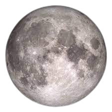
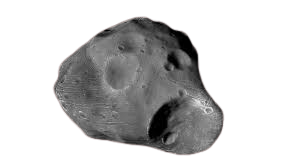
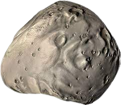

Earth's Moon:
The brightest and largest object in our night sky, the Moon makes Earth a
more live-able planet by moderating our home planet's wobble on its axis,
leading to a relatively stable climate. It also causes tides, creating a rhythm
that has guided humans for thousands of years. The Moon was likely
formed after a Mars-sized body collided with Earth several billion years
ago. Earth's only natural satellite is simply called "the Moon" because
people didn't know other moons existed until Galileo Galilei discovered
four moons orbiting Jupiter in 1610. In Latin, the Moon was called Luna,
which is the main adjective for all things Moon-related: lunar.

Moons of Mars:
Mars has two moons, Phobos and Deimos. Both are believed to be captured
asteroids or other debris from early in the formation of our solar system.
Phobos is the larger of Mars' two moons. It orbits Mars three times a day,
and is so close to the planet's surface that in some locations on Mars it
cannot always be seen. Phobos is nearing Mars at a rate of six feet (1.8
meters) every hundred years. At that rate, it will either crash into Mars in
50 million years or break up into a ring. Deimos is the smaller moon. It
orbits Mars every 30 hours.

